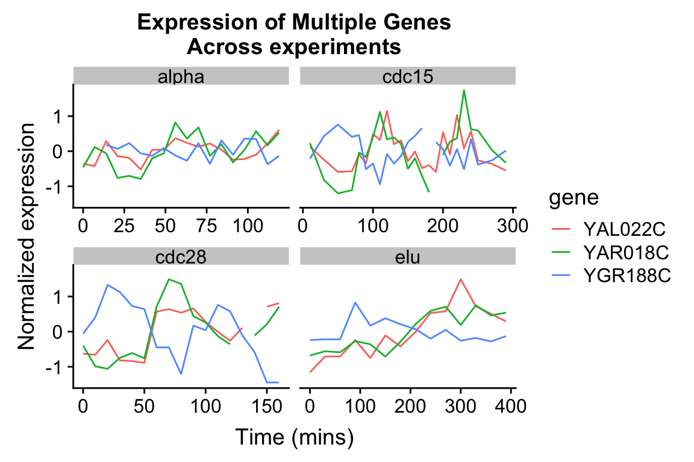
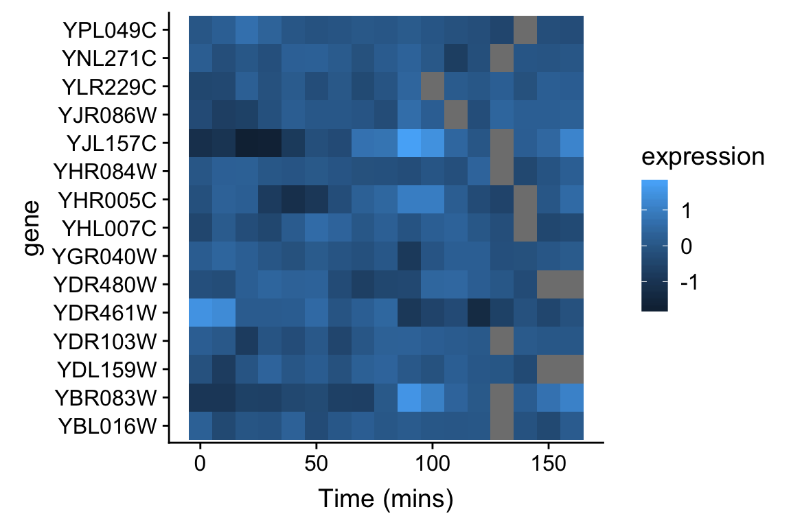

Chapter 7 Data wrangling
In the real world you’ll often create a data set (or be given one) in a format that is less than ideal for analysis. This can happen for a number of reasons. For example, the data may have been recorded in a manner convenient for collection and visual inspection, but which does not work well for analysis and plotting. Or the data may be an amalgamation of multiple experiments, in which each of the experimenters used slightly different naming conventions. Or the data may have been produced by an instrument that produces output with a fixed format. Sometimes important experimental information is included in the column headers of a spreadsheet.
Whatever the case, we often find ourselves in the situation where we need to “wrangle” our data into a “tidy” format before we can proceed with visualization and analysis. The “R for Data Science” text discusses some desirable rules for “tidy” data in order to facilitate downstream analyses. These are:
- Each variable must have its own column.
- Each observation must have its own row.
- Each value must have its own cell.
In this lecture we’re going to walk through an extended example of wrangling some data into a “tidy” format.
7.1 Libraries
library(magrittr)
library(stringr)
library(tidyverse)
library(cowplot)7.2 Data
To illustrate a standard data wrangling pipeline, we’re going to use a gene expression microarray data set, based on the following paper:
- Spellman PT, et al. 1998. Comprehensive identification of cell cycle-regulated genes of the yeast Saccharomyces cerevisiae by microarray hybridization. Mol Biol Cell 9(12): 3273-97.
In this paper, Spellman and colleagues tried to identify all the genes in the yeast genome (>6000 genes) that exhibited oscillatory behaviors suggestive of cell cycle regulation. To do so, they combined gene expression measurements from six different types of cell cycle synchronization experiments.
Download the Spellman data to your filesystem from this link (right-click the “Download” button and save to your Downloads folder or similar).
I suggest that once you download the data, you open it in a spreadsheet program (e.g. Excel) or use the RStudio Data Viewer to get a sense of what the data looks like.
Let’s load it into R, using the read_tsv() function, using the appropriate file path.
# the filepath may differ on your computer
spellman <- read_tsv("~/Downloads/spellman-combined.txt")Parsed with column specification:
cols(
.default = col_double(),
X1 = col_character(),
clb = col_character(),
alpha = col_character(),
cdc15 = col_character(),
cdc28 = col_character(),
elu = col_character()
)See spec(...) for full column specifications.The initial dimenions of the data frame are:
dim(spellman)The six types of cell cycle synchronization experiments are:
- synchronization by alpha-factor = “alpha”
- synchronization by cdc15 temperature sensitive mutants = “cdc15”
- synchronization by cdc28 temperature sensitive mutants = “cdc28”
- synchronization by elutration = “elu”
- synchronization by cln3 mutatant strains = “cln3”
- synchronization by clb2 mutant strains = “clb2”
7.3 Renaming data frame columms
Notice that when we imported the data we got a warning message: Missing column names filled in: 'X1' [1]. In a data frame, every column must have a name. The first column of our data set did not have a name in the header, so read_tsv automatically gave it the name X1.
Our first task is to give the first column a more meaningful name. This column gives “systematic gene names” – a standardized naming scheme for genes in the yeast genome. We’ll use dplyr::rename to do rename X1 to gene. Note that rename can take multiple arguments if you need to rename multiple columns simultaneously.
spellman.clean <-
spellman %>%
rename(gene = X1)7.4 Dropping unneeded columns
Take a look at the Spellman data again in your spreadsheet program (or the R Studio data viewer). You’ll notice there are some blank columns. These are simply visual organizing elements that the creator of the spreadsheet added to separate the different experiments that are included in the data set.
We can use dplyr::select to drop columns by prependingcolumn names with the negative sign:
# drop the alpha column keeping all others
spellman.clean %<>%
select(-alpha) Note that usually select() keeps only the variables you specify. However if the first expression is negative, select will instead automatically keep all variables, dropping only those you specify.
7.4.1 Finding all empty columns
In the example above, we looked at the data and saw that the “alpha” column was empty, and thus dropped it. This worked because there are only a modest number of columns in the data frame in it’s initial form. However, if our data frame contained thousands of columns, this “look and see” procedure would not be efficient. Can we come up with a general solution for removing empty columns from a data frame?
When you load a data frame from a spreadsheet, empty cells are given the value NA. In previous class sessions we were introduced to the function is.na() which tests each value in a vector or data frame for whether it’s NA or not. We can count NA values in a vector by summing the output of is.na(). Conversely we can count the number of “not NA” items by using the negation operator (!):
# count number of NA values in the alpha0 column
sum(is.na(spellman$alpha0))
# count number of values that are NOT NA in alpha0
sum(!is.na(spellman$alpha0))This seems like it should get us close to a solution but sum(is.na(..)) when applied to a data frame counts NAs across the entire data frame, not column-by-column.
# doesn't do what we hoped!
sum(is.na(spellman))If we want sums of NAs by column, we instead use the colSums() function:
# get number of NAs by column
colSums(is.na(spellman))Columns with all missing values can be more conveniently found by asking for those columns where the number of “not missing” values is zero:
# get names of all columns for which all rows are NA
# useing standard indexing
names(spellman)[colSums(!is.na(spellman)) == 0]We can combine the colSums(!is.na()) idiom with the dplyr::select_if function to quickly remove all empty columns as so:
spellman.clean %<>%
# keep ONLY the non-empty columns
select_if(colSums(!is.na(.)) > 0)7.4.2 Dropping columns by matching names
Only two time points from the cln3 and clb2 experiments were reported in the original publication. Since complete time series are unavailable for these two experimental conditions we will drop them from further consideration.
select() can be called be called with a number of “helper function” (?select_helpers). Here we’ll illustrate the matches() helper function which matches column names to a “regular expression”. Regular expressions (also referred to as “regex” or “regexp”) are a way of specifying patterns in string. For the purposes of this document we’ll illustrate regexs by example; for a more detailed explanation of regular expressions see the the regex help(?regex) and the Chapter on Strings in “R for Data Analysis”:
Let’s see how to drop all the “cln3” and “clb2” columns from the data frame using matches():
spellman.clean %<>%
select(-matches("cln3")) %>%
select(-matches("clb2"))If we wanted we could have collapsed our two match statements into one as follows:
spellman.clean %<>%
select(-matches("cln3|clb2"))In this second example, the character “|” is specifing an OR match within the regular expression, so this regular expression matches column names that contain “cln3” OR “clb2”.
7.5 Reshaping data with tidyr
The tidyr package provides functions for reshaping or tidying data frames. tidyr is yet another component of the tidyverse, and thus was loaded by the library(tidyverse).
Today we’re going to look at two functions tidyr::gather() and tidyr::extract(), and how they can be combined with now familiar dplyr functions we’ve seen previously. The reading assignment for today’s class session covers a variety of other functions defined in tidyr.
The Spellman data, as I provided it to you, is in what we would call “wide” format. Each column (besides the gene column) corresponds to an experimental condition and time point. For example, “alpha0” is the alpha-factor experiment at time point 0 mins; “alpha7” is the alpha-factor experiment at time point 7 mins, etc. The cells within each column correspond to the expression of a corresponding gene (given by the first column which we renamed gene) in that particular experiment at that particular time point.
In every column (except “gene”), the cellsrepresents the same abstract property of interest – the expression of a gene of interest in a particular experiment/time point. Our first task will be to rearrange our “wide” data frame that consists of many different columns representing gene expression into a “long” data frame with just a single column representing expression. We’ll also create a new column to keep track of the which experiment and time point the measurement came from.
7.5.1 Wide to long conversions using tidyr::gather
tidyr::gather() takes multiple columns, and collapses them together into a smaller number of new columns. When using gather() you give the names of the new columns to create, as well as the names of any existing columns gather should not collect together.
Here we want to collapse all 73 or the expression columns – “alpha0” to “elu390” – into two columns: 1) a column to represent the expt/time point of the measurement, and 2) a column to represent the corresponding expression value. The only column we don’t want to touch is the gene column with our gene names.
# convert "wide" data to "long"
spellman.long <-
spellman.clean %>%
gather(expt.and.time, expression, -gene)Take a moment to look at the data in the “long format”:
head(spellman.long)And compare the dimensions of the wide data to the new data:
dim(spellman.clean) # for comparison
dim(spellman.long)As you see, we’ve gone from a data frame with 6178 rows and 74 columns (wide format), to a new data frame with 450994 rows and 3 columns (long format).
7.5.2 Extracting information from combined variables using tidyr::extract
The column expt.and.time violates one of our principles of tidy data: “Each variable must have its own column.”. This column conflates two different types of information – the experiment type and the time point of the measurement. Our next task is to split this information up into two new variables, which will help to facilitate downstream plotting and analysis.
One complicating factor is that the different experiments/time combinations have different naming conventions:
The “alpha” and “elu” experiments are of the form “alpha0”, “alpha7”, “elu0”, “elu30”, etc. In this case, the first part of the string gives the experiment type (either alpha or elu) and the following digits give the time point.
In the “cdc15” and “cdc28” experiments the convention is slightly different; they are of the form “cdc15_0”, “cdc15_10”, “cdc28_0”, “cdc28_10”, etc. Here the part of the string before the underscore gives the experiment type, and the digits after the underscore give the time point.
Because of the differences in naming conventions, we will find it easiest to break up spellman.long into a series of sub-data sets corresponding to each experiment type in order to extract out the experiment and time information. After processing each data subset separately, we will join the modified sub-data frames back together.
7.5.3 Subsetting rows
Let’s start by getting just the rows corresponding to the “alpha” experiment/times. Here we use dplyr::filter in combination with stringr::str_detect to get all those rows in which the expt.and.time variable contains the string “alpha”.
alpha.long <-
spellman.long %>%
filter(str_detect(expt.and.time, "alpha"))
# look at the new data frame
dim(alpha.long)
head(alpha.long, n = 10)7.5.4 Splitting columns
Having subsetted the data, we can now split expt.and.time into two new variables – expt and time. To do this we use tidyr::extract.
alpha.long %<>%
tidyr::extract(expt.and.time, # column we're extracting from
c("expt", "time"), # new columns we're creating
regex="(alpha)([[:digit:]]+)", # regexp (see below)
convert=TRUE) # automatically convert column types
# NOTE: I'm being explict about saying tidyr::extract because the
# magrittr package defines a different extract functionLet’s take a moment to look at the regex argument to extract – regex="(alpha)([[:digit:]]+)". The regex is specified as a character string. Each part we want to match and extract is surround by parentheses. In this case we have two sets of parentheses corresponding to the two matches we want to make. The first part of the regex is (alpha); here we’re looking to make an exact match to the string “alpha”. The second part of the regex reads ([[:digit:]]+). [[:digit:]] indicates we’re looking for a numeric digit. The + after [[:digit:]] indicates that we want to match one or more digits (i.e. to get a match we need to find at least one digit, but more than one digit should also be a match).
Let’s take a look at the new version of alpha.long following application of extract:
head(alpha.long, n = 10)Notice our two new variables, both of which have appropriate types!
A data frame for the elutriation data can be created similarly:
elu.long <-
spellman.long %>%
filter(str_detect(expt.and.time, "elu")) %>%
tidyr::extract(expt.and.time, # column we're extracting from
c("expt", "time"), # new columns we're creating
regex="(elu)([[:digit:]]+)", # regexp (see below)
convert=TRUE) # automatically convert column types7.5.4.1 A fancier regex for the cdc experiments
Now let’s process the cdc experiments (cdc15 and cdc28). As before we extract the corresponding rows of the data frame using filter and str_detect. We then split expt.and.time using tidyr::extract. In this case we carry out the two steps in a single code block using pipes:
cdc.long <-
spellman.long %>%
# both cdc15 and cdc28 contain "cdc" as a sub-string
filter(str_detect(expt.and.time, "cdc")) %>%
tidyr::extract(expt.and.time,
c("expt", "time"),
regex="(cdc15|cdc28)_([[:digit:]]+)", # note the fancier regex
convert=TRUE)The regex – "(cdc15|cdc28)_([[:digit:]]+)" – is slightly fancier in this example. As before there are two parts we’re extracting: (cdc15|cdc28) and ([[:digit:]]+). The first parenthesized regexp is an “OR” – i.e. match “cdc15” or “cdc28”. The second parenthesized regexp is the same as we saw previously. Separating the two parenthesized regexps is an underscore (_). The underscore isn’t parenthesized because we only want to use it to make a match not to extract the corresponding match.
7.5.5 Combining data frame rows
If you have two or more data frames with identical columns, the rows of the data frame can be combined using rbind (defined in the base package). For example, to reassemble the alpha.long, elu.long, and cdc.long data frames into a single data frame we do:
spellman.final <- rbind(alpha.long, elu.long, cdc.long)
# check the dimensions of the new data frame
dim(spellman.final)7.5.6 Sorting data frame rows
Currently the spellman.final data frame is sorted by time point and experiment.
head(spellman.final, n = 10)It might be useful instead to sort by gene and experiment. To do this we can use dplyr::arrange:
spellman.final %<>%
arrange(gene, expt)
# look again at the rearranged data
head(spellman.final, n = 10)7.5.7 Collapsing columns using tidyr::unite
unite combines the data from multiple columns into one, separating the column data with a consistent separator character (the underscore character “_" by default). For example, if we wanted to combined the experiment and time columns again (recall that we previously separated with with extract) we could do:
spellman.recombined <-
spellman.final %>%
unite(expt.and.time, expt, time) # give new column name first
# then give columns to combine
dim(spellman.recombined)
head(spellman.recombined, n = 10)7.5.8 Splitting columns using tidyr::separate
separate splits a column into multiple columns. It’s very much like extract except that it only takes a single regex for the separator, which by default is any non-alphabetic or non-numeric character. For example, to re-split expt.and.time in spellman.recombined we could do:
spellman.respread <-
spellman.recombined %>%
separate(expt.and.time, c("expt", "time"), convert = TRUE)
dim(spellman.respread)
head(spellman.respread,n= 10)Faced with the task of splitting columns, try tidyr::separate first and only consider tidyr::extract if you need to defines more sophisticated rules for splitting.
7.5.9 Long-to-wide conversion using tidyr::spread
tidyr::spread is the inverse of tidyr::gather. gather() took multiple columns and collapsed them together into a smaller number of new columns. The tidyr documentation calls this “collapsing into key-value pairs”. By contrast, spread() creates new columns by spreading “key-value pairs” (a column representing the “keys” and a column reprsenting the “values”) into multiple columns.
Here let’s use spread to use the gene names (the “key”) and expression measures (the “values”) to create a new data frame where the genes are the primary variables (columns) of the data.
spellman.gene.focused <-
spellman.final %>%
spread(gene, expression)
dim(spellman.gene.focused)Both “long” and “wide” tidy versions of the same data are useful, depending on the specific analyses and/or visualiztions you want to accomplish. We’ll look at applications of both in the sections that follow.
7.6 Using your tidy data
Whew – that was a fair amount of work to tidy our data! But having done so we can now carry out a wide variety of very powerful analyses.
7.6.1 Visualizing gene expression time series
Let’s start by walking through a series of visualizations of gene expression time series. Each plot will show the expression of one or more genes, at different time points, in one or more experimental conditions. Our initial visualizations exploit the “long” versions of the tidy data.
First a single gene in a single experimental condition:
spellman.final %>%
filter(expt == "alpha", gene == "YAL022C") %>%
ggplot(aes(x = time, y = expression)) +
geom_line() +
labs(x = "Time (mins)", y = "Expression of YAL022C")
We can easily modify the above code block to visualize the expression of multiple genes of interest:
genes.of.interest <- c("YAL022C", "YAR018C", "YGR188C")
spellman.final %>%
filter(gene %in% genes.of.interest, expt == "alpha") %>%
ggplot(aes(x = time, y = expression, color = gene)) +
geom_line() +
labs(x = "Time (mins)", y = "Normalized expression",
title = "Expression of multiple genes\nfollowing synchronization by alpha factor") By employing
By employing facet_wrap() we can visualize the relationship between this set of genes in each of the experiment types:
spellman.final %>%
filter(gene %in% genes.of.interest) %>%
ggplot(aes(x = time, y = expression, color = gene)) +
geom_line() +
facet_wrap(~ expt) +
labs(x = "Time (mins)", y = "Normalized expression",
title = "Expression of Multiple Genes\nAcross experiments") 
The different experimental treatments were carried out for varying lengths of time due to the differences in their physiological effects. Plotting them all on the same time scale can obscure that patterns of oscillation we might be interested in, so let’s modify our code block so that plots that share the same y-axis, but have differently scaled x-axes.
spellman.final %>%
filter(gene %in% genes.of.interest) %>%
ggplot(aes(x = time, y = expression, color = gene)) +
geom_line() +
facet_wrap(~ expt, scales = "free_x") +
labs(x = "Time (mins)", y = "Normalized expression",
title = "Expression of Multiple Genes\nAcross experiments") 
7.6.2 Finding the most variable genes
When dealing with vary large data sets, one ad hoc filtering criteria that is often employed is to focus on those variables that exhibit that greatest variation. To do this, we first need to order our variables (genes) by their variation. Let’s see how we can accomplish this using our long data frame:
by.variance <-
spellman.final %>%
group_by(gene) %>%
summarize(expression.var = var(expression, na.rm = TRUE)) %>%
arrange(desc(expression.var))
head(by.variance)The code above calculates variance but ignores the fact that we have different experimental conditions. To take into account the experimental design of the data at hand, let’s calculate the average variance across the experimental conditions:
by.avg.variance <-
spellman.final %>%
group_by(gene, expt) %>%
summarize(expression.var = var(expression, na.rm = TRUE)) %>%
group_by(gene) %>%
summarize(avg.expression.var = mean(expression.var)) %>%
arrange(desc(avg.expression.var))
head(by.avg.variance)Based on the average experession variance across experimental conditions, let’s get the names of the 1000 most variable genes:
top.genes.1k <- by.avg.variance[1:1000,]$gene
head(top.genes.1k)7.6.3 Exploring bivariate relationships using “wide” data
The “long” version of our data frame proved useful for exploring how gene expression changed over time. By contrast, our “wide” data frame is more convient for exploring how pairs of genes covary together. For example, we can generate bivariate scatter plots depicting the relationship between two genes in the four different experimental conditions:
spellman.gene.focused %>%
filter(!is.na(YAL022C) & !is.na(YAR018C)) %>% # filter any missing values
ggplot(aes(x = YAL022C, y = YAR018C)) +
geom_point() +
theme(aspect.ratio = 1) +
facet_wrap(~expt, nrow = 2, ncol = 2) 
7.6.4 Calculating correlations between genes
Let’s explore more global bivariate relationships by calculating all the pairwise correlations between genes, focusing our attention on only the top 1000 most variable genes (as calculated previously).
Correlation is a measure of linear association between a pair of variables, and ranges from -1 to 1. A value near zero indicates the variables are uncorrelated (no linear association), while values approaching +1 indicate a strong positive association (the variables tend to get bigger or smaller together) while values near -1 indicate strong negative association (when one variable is larger, the other tends to be small).
First, let’s reduce our “wide” data frame to including only the top 1000 genes:
top.1k.wide <-
spellman.gene.focused %>%
# get expt and time column plus top 1000 genes
select(expt, time, top.genes.1k)
dim(top.1k.wide)Now, we calculate the correlations between all those genes. We need to drop two columns from the data frame, corresponding to “expt” and “time”, and we then use the cor function to calculate the pairwise correlations. Since there is missing data (indicated with NAs) we also need to tell the cor function to only use pairwise complete observations when calculating correlations.
spellman.cor <-
top.1k.wide %>%
select(-expt, -time) %>% # drop expt and time
cor(use = "pairwise.complete.obs")The correlation matrix is a square matrix with the number of rows and columns equal to the number of variables:
dim(spellman.cor)To get the correlations with a gene of interest, we can index with the gene name on the rows of the correlation matrix. For example, to get all the correlations between the gene YAL022C and the other genes in the top 1000 set:
spellman.cor["YAL022C",] In the next statement we extract the names of the genes that have correlations with YAL022C greater than 0.6. First we test genes to see if they have a correlation with YAL022C greater than 0.6, which returns a vector of TRUE or FALSE values. This vector of Boolean values is than used to index into the rownames of the correlation matrix, pulling out the gene names where the statement was true.
pos.corr.YAL022C <- rownames(spellman.cor)[spellman.cor["YAL022C",] > 0.6]
length(pos.corr.YAL022C)We then return to our wide data to show this set of genes that are strongly positively correlated with YAL022C, using faceted line graphs:
spellman.final %>%
filter(gene %in% pos.corr.YAL022C) %>%
ggplot(aes(x = time, y = expression, color = expt, group = gene)) +
geom_line(alpha = 0.33) +
facet_wrap(~ expt, scales = "free_x", nrow = 2, ncol = 2) +
theme(legend.position = "none")
We can similarly filter for genes that have negative correlations with YAL022C.
neg.corr.YAL022C <- colnames(spellman.cor)[spellman.cor["YAL022C",] <= -0.4]As before we generate a faceted line plot showing these genes by experiment:
spellman.final %>%
filter(gene %in% neg.corr.YAL022C) %>%
ggplot(aes(x = time, y = expression, color = expt, group = gene)) +
geom_line(alpha = 0.33) +
facet_wrap(~ expt, scales = "free_x", nrow = 2, ncol = 2) +
theme(legend.position = "none") 
7.6.5 Adding new columns and combining filtered data frames
Now let’s create a new data frame by: 1) filtering on our list of genes that have strong positive and negative correlations with YAL022C; and 2) creating a new variable, “corr.with.YAL022C”, which indicates the sign of the correlation. We’ll use this new variable to group genes when we create the plot.
pos.corr.df <- spellman.final %>%
filter(gene %in% pos.corr.YAL022C) %>%
mutate(corr.with.YAL022C = "positive")
neg.corr.df <- spellman.final %>%
filter(gene %in% neg.corr.YAL022C) %>%
mutate(corr.with.YAL022C = "negative")
combined.pos.neg <- rbind(pos.corr.df, neg.corr.df)Finally, we plot the data, colored according to the correlation with YAL022C.
ggplot(combined.pos.neg,
aes(x = time, y = expression, group = gene,
color = corr.with.YAL022C)) +
geom_line(alpha=0.5) +
facet_wrap(~ expt, nrow =2, ncol = 2, scales = "free_x") +
# changes legend title for discrete color legends
scale_color_discrete(name = "Correlation with YAL022C") 
7.7 Heat maps
Line plots can become visually busy very quickly, and hence aren’t very useful for more than a few tens of genes. An alternative is a “heat map” which depicts data in a grid or table like form, with values indicated by color. Heat maps are good for depicting large amounts of data and providing a coarse “10,000 foot view”. We’ll be looking at lots of heat maps when we get into clustering, but here’s a simple example based on the genes that were positively and negatively correlated with YAL022C.
7.7.1 RColorBrewer
The RColorBrewer packages provides nice color schemes that are useful for creating heat maps. RColorBrewer defines a set of color palettes that have been optimized for color discrimination, to be color blind friendly, etc. Once you’ve installed the RColorBrewer package you can see the available color palettes as so:
library(RColorBrewer)
# show representations of the palettes
par(cex = 0.5) # reduce size of text in the follow plot
display.brewer.all() 
7.7.2 Creating a heat map using geom_tile
We’ll use the geom_tile geom to create the heat map. We’ll depict genes in rows, time points in columns, and expression values by the fill color of each tile. We’ll use the Red-to-Blue (“RdBu”) color scheme defined in RColorBrewer, however we’ll reverse the scheme so blues represent low expression and reds represent high expression.
# generate the color scheme to use
color.scheme <- rev(brewer.pal(8,"RdBu"))
# re-factor gene names so positive and negative genes are spatially distinct in plot
combined.pos.neg$gene <-
factor(combined.pos.neg$gene,
levels = c(pos.corr.YAL022C, neg.corr.YAL022C))
combined.pos.neg %>%
filter(expt == "cdc28") %>% # focus only on one condition
ggplot(aes(x = time, y = gene)) +
geom_tile(aes(fill = expression)) +
scale_fill_gradientn(colors=color.scheme) +
xlab("Time (mins)")
Can you visually see the breakpoint between the positively and negatively correlated sets of genes?
7.7.3 A “fancy” figure
If we want to get really fancy, we can use cowplot’s draw_plot function that allows us to place plots at arbitrary locations and at arbitrary sizes onto the canvas. The coordinates of the canvas run from 0 to 1, and the point (0, 0) is in the lower left corner of the canvas. We’ll use draw_plot to draw a complex figure with a heatmap on the left, and two smaller line plots on the right.
cdc28.filtered <- filter(combined.pos.neg, expt == "cdc28")
pos.corr.lineplot <- cdc28.filtered %>%
filter(gene %in% pos.corr.YAL022C) %>%
ggplot(aes(x = time, y = expression, group = gene)) +
geom_line(alpha = 0.33, color = 'red') +
labs(x = "Time (mins)", y = "Expression",
title = "Genes Positively correlated\nwith YAL022C")
neg.corr.lineplot <- cdc28.filtered %>%
filter(gene %in% neg.corr.YAL022C) %>%
ggplot(aes(x = time, y = expression, group = gene)) +
geom_line(alpha = 0.33, color = 'blue') +
labs(x = "Time (mins)", y = "Expression",
title = "Genes negatively correlated\nwith YAL022C")
heat.map <-
ggplot(cdc28.filtered, aes(x = time, y = gene)) +
geom_tile(aes(fill = expression)) +
scale_fill_gradientn(colors=color.scheme) +
labs(x = "Time (mins)", y = "Gene") +
theme(legend.position = "none")
fancy.plot <- ggdraw() +
draw_plot(heat.map, 0, 0, width = 0.6) +
draw_plot(neg.corr.lineplot, 0.6, 0.5, width = 0.4, height = 0.5) +
draw_plot(pos.corr.lineplot, 0.6, 0, width = 0.4, height = 0.5) +
draw_plot_label(c("A", "B", "C"), c(0, 0.6, 0.6), c(1, 1, 0.5), size = 15)
fancy.plot
7.7.4 Sorting and visualizing genes by time of maximum expression
In a time series data one might be interested in examing genes with respect to some property of their dynamic expression. Here we’ll focus on the 1000 most variable genes, sort the data from the alpha factor synchronization experiment by time of maximum expression.
First let’s filter our tidy, long data frame to include only our top 1000 genes and the alpha factor measurements:
top1k.alpha.long <-
spellman.final %>%
filter(gene %in% top.genes.1k, expt == "alpha")To find the time of maximum expression we’ll employ the function which.max (which.min), which finds the index of the maximum (minimum) element of a vector. For example to find the index of the maximum expression measurement for YAL022C we could do:
top1k.alpha.long %>%
filter(gene == "YAL022C") %$% # note the exposition pipe operator!
which.max(expression)From the code above we find that the index of the observation at which YAL022C is maximal is 18. To get the corresponding time point we can do something like this:
top1k.alpha.long %>%
filter(gene == "YAL022C") %$% # again note the exposition pipe operator!
time[which.max(expression)]Thus YAL022C expression peaks at 119 minutes in the alpha factor experiment.
To find the index of maximal expression of all genes we can apply the dplyr::group_by() and dplyr::summarize() functions
peak.expression <-
top1k.alpha.long %>%
group_by(gene) %>%
summarise(peak = which.max(expression))
dim(peak.expression)
head(peak.expression, n = 10)We can then generate a heatmap where we sort the rows (genes) of the heatmap by their time of peak expression. We introduce a new geom – geom_raster – which is like geom_tile but better suited for large data.
The explicit sorting of the data by peak expression is carried out in the call to scale_y_discrete where the limits (and order) of this axis are set with the limits argument (see scale_y_discrete and discrete_scale in the ggplot2 docs).
top1k.alpha.long %>%
ggplot(aes(x = time, y = gene)) +
geom_raster(aes(fill = expression)) + #
scale_fill_gradientn(limits=c(-2,2),colors=color.scheme) +
scale_y_discrete(limits=peak.expression$gene[rev(order(peak.expression$peak))]) +
labs(x = "Time (mins)", y = "Genes",
title = "1000 most variable genes",
subtitle = "Sorted by time of peak expression") +
# the following line suppresses tick and labels on y-axi
theme(axis.text.y = element_blank(), axis.ticks.y = element_blank())
Figure 7.1: A Heatmap showing genes in the alpha-factor experiment, sorted by peak expression